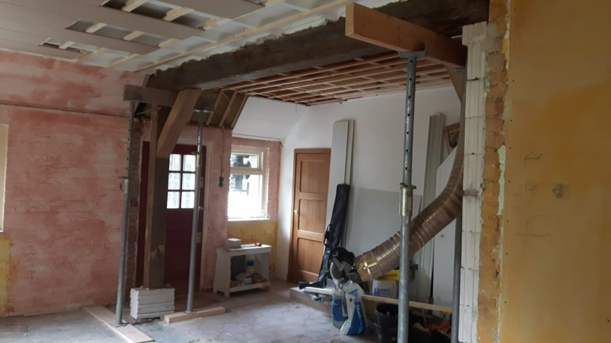
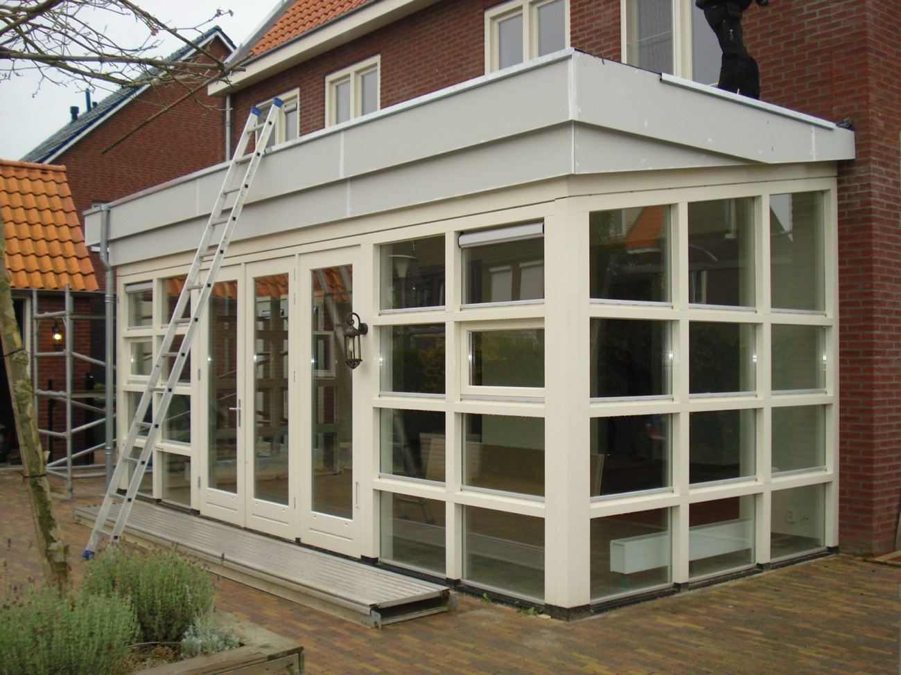
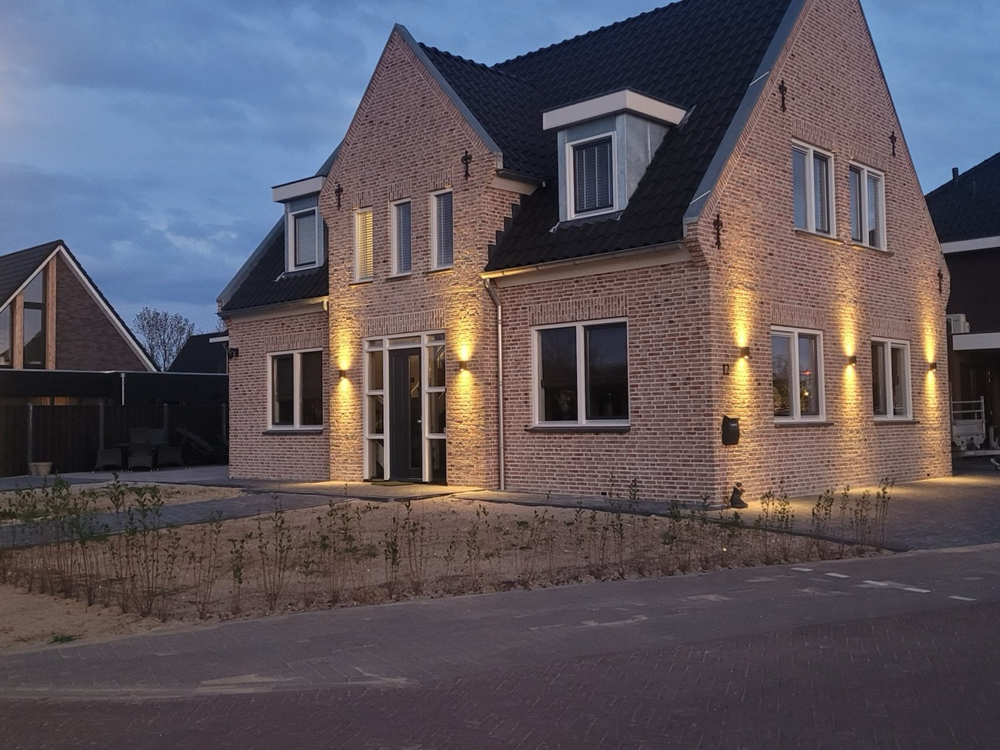
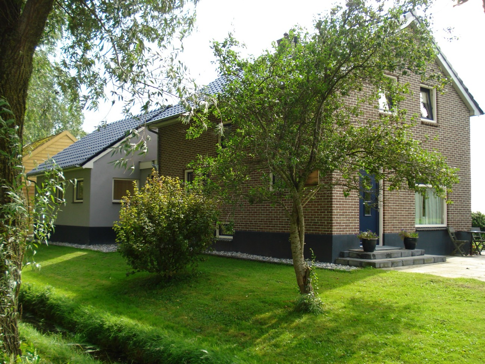
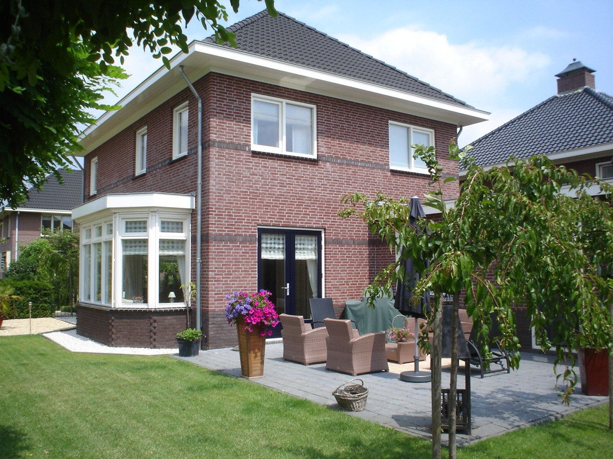
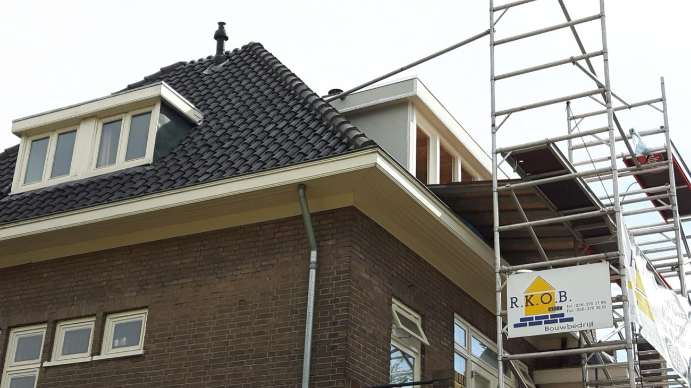
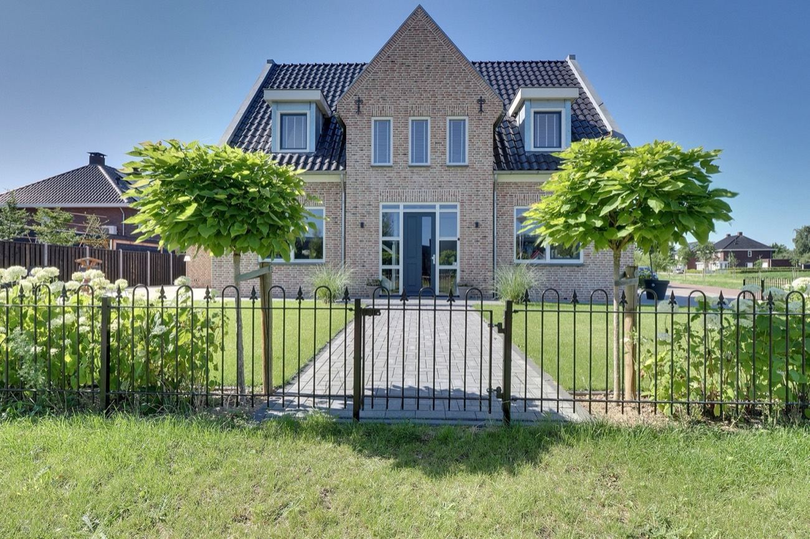

Losse keuring
Bouwkundige keuring
€ 595per woning
- Keuring ter plaatse, ook als u zelf niet in Spanje bent
- Rapport met foto's en gebreken op volgorde van urgentie
- Ruwe kostenraming per gebrek
- Telefonische toelichting
Aankoopbegeleiding & renovatie in Spanje
Wij zoeken met u, keuren de woning vóór u tekent en rekenen uit wat hij echt kost, renovatie inbegrepen. We werken alleen voor de koper. Nooit voor de verkoper.
Waarom Quint
In Spanje werkt de makelaar meestal voor de verkoper en verdient hij aan de verkoopprijs. Gebreken en bijkomende kosten zijn niet zijn zorg. Daar staat u als koper alleen voor, vaak in een taal en een systeem dat u niet kent.
Werkwijze
U kiest zelf hoeveel u uit handen geeft. Een losse keuring kan ook.
We stellen samen uw zoekprofiel op: regio, budget, wensen. Daarna selecteren we woningen die echt passen.
We gaan mee naar de bezichtiging en keuren de woning bouwkundig. U krijgt een rapport met foto's.
Renovatieadvies met een kostenraming, plus alle aankoopkosten. Eén totaalbedrag.
We begeleiden het bod en de stappen tot de notaris, samen met uw eigen advocaat.
Na de aankoop voeren we de renovatie of verbouwing voor u uit of regelen we die.

Bouwkundige keuring
Een verse laag witkalk verbergt veel. Wij kijken waar het geld zit: in de constructie, het dak, het water en de papieren.

Renovatie en verbouwing
Omdat wij de woning al vóór de aankoop hebben gekeurd, weten we precies wat er moet gebeuren. U krijgt één aanspreekpunt, vaste afspraken over planning en budget, en wekelijks foto's van de voortgang als u in Nederland of België bent.
Kosten berekenen
De vraagprijs is maar een deel. Bereken hier een eerste indicatie van het totaal, met belastingen, notaris en renovatie.
Indicatie op basis van gangbare tarieven voor bestaande woningen. Tarieven verschillen per regio en situatie. Bij nieuwbouw geldt btw (IVA) in plaats van ITP. Voor uw woning rekenen we alles exact uit.
Al iets gezien?
Plak de link van de advertentie. We bekijken de woning, vragen de papieren op en vertellen u eerlijk wat we zien, voordat u een bod doet.
Dit is de voorbeeldversie van de site. Op de echte site komt de link direct bij ons binnen.
Actueel aanbod bekijken
Costa BlancaAlicante↗ Costa del SolMálaga↗ Costa CálidaMurcia↗ Costa BravaGirona↗Opent idealista.com in een nieuw venster.
Tarieven
U betaalt ons, niet de verkoper. Daarom kunnen we u ook afraden om te kopen.
Losse keuring
Complete begeleiding
Na de aankoop
Tarieven inclusief 21% IVA. Reiskosten binnen het werkgebied inbegrepen. Bij complete begeleiding verrekenen we eerdere keuringen.
“Ik heb te vaak gezien hoe kopers pas na de sleutel ontdekten wat ze hadden gekocht.”
Over Quint
Achter Quint staat naam. Ruim 25 jaar bouwde en renoveerde hij woningen in Nederland met zijn eigen bouwbedrijf, RKOB Bouwbedrijf: van woonboerderijen en jaren-30-woningen tot complete nieuwbouw. Nu woont en werkt hij in regio.
Quint is ontstaan uit een eenvoudig idee: wie in Spanje een huis koopt, verdient iemand die aan zijn kant staat. Iemand die weet hoe een dak hoort te liggen, wat een scheur betekent en wat een renovatie hier kost.
Wij weten hoe een huis in elkaar zit en hebben geen belang bij de verkoop.
Eigen werk
Wie zelf honderden keren een dak, een fundering en een badkamer heeft vernieuwd, ziet bij een bezichtiging direct wat er mis is. Een selectie uit ons werk in Nederland.





Veelgestelde vragen
Dan heeft de keuring zijn werk gedaan. U betaalt alleen de keuring. Bij complete begeleiding zoeken we gewoon verder, de keuring van maximaal drie woningen is inbegrepen.
Ja, want de meeste woningen staan bij een makelaar te koop. We bezichtigen via hen, maar we ontvangen geen provisie en hebben geen afspraken met verkopers. Ons enige belang is uw belang.
Nee. Voor de juridische controle, zoals de eigendomsakte (nota simple), schulden op de woning en het koopcontract, raden we altijd een eigen onafhankelijke advocaat aan. We werken daar nauw mee samen en kunnen u er een aanbevelen.
Ja. We bezichtigen en keuren ter plaatse, sturen foto's en video en bespreken alles met u via videobellen. U komt pas naar Spanje als er een woning is die het waard is.
We werken vanuit regio. Voor andere regio's overleggen we graag wat mogelijk is.
Contact
Een kennismaking is vrijblijvend en kost niets. Binnen één werkdag hoort u van ons.